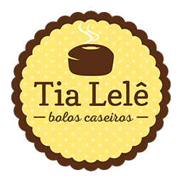

Receitas caseiras - inicio
Pagina Inicial
Bolo de Cenoura
Bolo de Laranja
Nosso segredo: Paixão pela gastronomia
Alessandra Riguete, ou Tia Lelê, sempre apaixonada por cozinhar, começou despretenciosamente, como muitas cozinheiras no Brasil. Um dia a paixão foi virando profissão e com muita dedicação, em 2015, foi inaugurada a primeira loja.